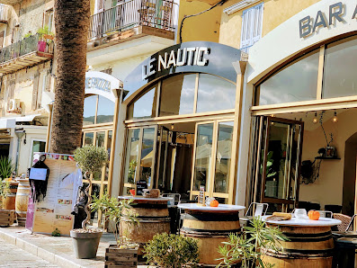
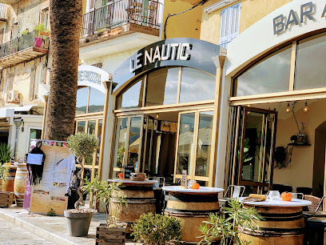

Moules Cap Corse
Marinées à la corse, servies chaudes, parfumées d'herbes du maquis, frites maison en accompagnement.
Spécialité signature
Restaurant maritime, Calvi
Sur le Quai Adolphe Landry, Le Nautic sert midi et soir une cuisine maritime généreuse : moules Cap Corse, gambas risotto, poissons grillés. Vue sur les bateaux, citadelle génoise en arrière-plan, accueil attentionné 7j/7.

La maison
Installé en première ligne du port de Calvi, Le Nautic cultive une cuisine maritime franche : produits de la pêche, fruits de mer, spécialités corses qui disent la Balagne. La salle et la terrasse ouvrent sur les voiliers du Quai Adolphe Landry, la citadelle génoise en toile de fond.
Ouvert toute l'année, midi et soir, 7j/7. Un restaurant familial qui accueille les voyageurs de passage comme les habitués, pour un déjeuner au soleil ou un dîner au coucher. Privatisations possibles pour vos célébrations.

Spécialités de la maison
Marinées à la corse, servies chaudes, parfumées d'herbes du maquis, frites maison en accompagnement.
Spécialité signature
Risotto crémeux au jus de crustacés, gambas snackées à la plancha, zeste de citron de Corse.
Signature méditerranéenne
Arrivage du jour, cuisson à la plancha, huile d'olive et herbes fraîches, légumes de saison.
Pêche locale
En images

"Niché en bord de mer, une expérience culinaire exceptionnelle mêlant saveurs authentiques et cadre idyllique."
Rankeat.fr
"Superbe emplacement sur le port. Service au top, personnel attentionné et efficace."
Tripadvisor, avis 5 étoiles
Trouver, réserver
Quai Adolphe Landry
20260 Calvi, Haute-Corse
20 à 30 € par personne, selon la formule.